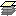

The IDE's CVS support enables you to view and manage the evolution of changes in version-controlled files.
CVS-Lite enables you to view file status information in several ways:
The Versioning window displays versioned files using the following color coding and font styles:
| Icon | Description |
|---|---|
| General version-controlled file node, annotated with a revision number and log message. | |
 |
Current revision node. The current copy of a file as it exists in your working directory. |
| Revision subnode. A prior revision of a file existing in the VCS repository. | |
| Branch revision node. A prior revision of a file existing on a branch in the VCS repository. |
Current VCS file status is indicated by adding the following badges to project, package and directory icons:
| Badge | Description |
|---|---|
| Up to Date badge. The local copy of the file is the same as the current repository revision. | |
| Needs Checkout badge. | |
| Locally Modified badge. The local copy of the file has been changed and needs to be committed. | |
|
Locally Removed badge. The local copy of the file has been removed from the working directory. |
|
Merge Conflict badge. The repository copy of the file is a more recent revision than the local copy and contains changes which conflict with the local version's new edits. |
To open the Versioning window, choose Window > Versioning > Versioning (Ctrl-8).
The Versioning window presents a real-time view of the changes in selected directories. It opens at the bottom of the IDE whenever you view changes. You can do this by right-clicking any project, directory, or file that is in a CVS working directory and choose CVS > Show Changes.
The CVS commands submenu contains all of the available CVS commands for the currently selected file or directory.
You can access the CVS commands submenu by right-clicking a file or directory in any of the following:
The Status Bar in the bottom left of the IDE window displays the current command's status. If the command is set to display ouput, the output is automatically displayed in the Output window.
| See Also | |
|---|---|
|
About Version Control Working with Version Control VCS Tasks: Quick Reference | |